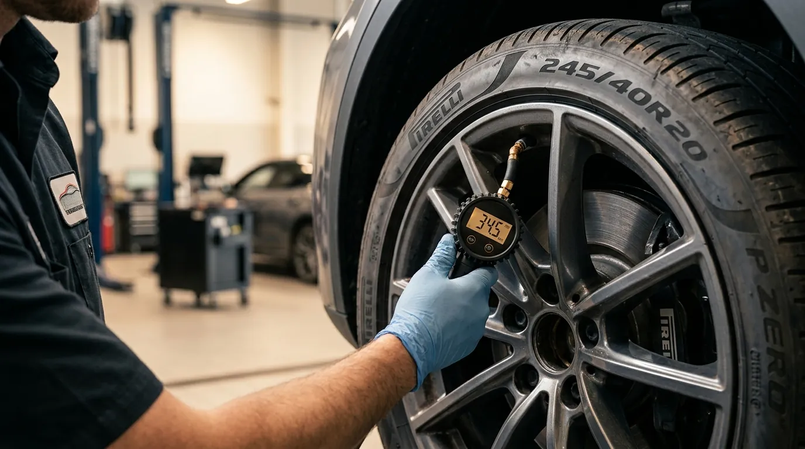

TPMS warning diagnosis, pressure verification, supported reset procedures and sensor checks for compatible vehicles.

A tyre-pressure warning can mean low pressure, a real leak, a sensor issue or a system that needs relearning after tyre work. We begin by checking actual tyre pressures rather than assuming the electronics are wrong. Supported vehicles can then be scanned or reset as appropriate. If a sensor appears faulty or a tyre is losing pressure, we explain the underlying issue so the warning is not simply cleared and ignored.
If the symptom is unclear, book the workshop and we will diagnose before adding work.
TPMS warning remains on after pressures are corrected
One wheel stops reporting pressure correctly
Warning appeared after tyre replacement, rotation or wheel work
Every step is explained clearly, with extra work approved before it is added.
All tyre pressures are checked against the vehicle recommendation.
Supported sensor and warning information is reviewed to identify the likely cause.
A supported reset/relearn is completed or the next repair step is explained.
The exact technical work depends on vehicle condition, but the booking follows a clear inspection and handover process.
Quick answers to the questions we hear most often for this job.
No. A warning caused by real pressure loss will return until the leak or tyre issue is fixed.
No. TPMS design and relearn procedures vary by make, model and year.
Where compatible parts and procedures are supported, sensor replacement can be quoted after diagnosis.
Choose TPMS Service now, or return to all services if you want to compare options first.